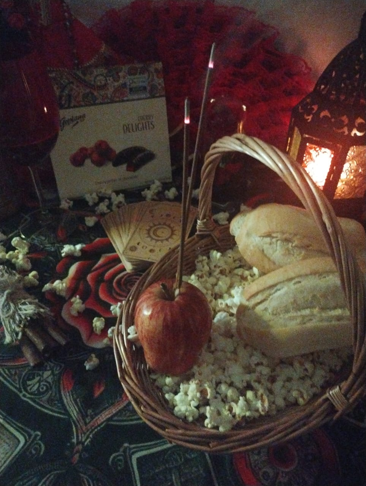

Tarô
Leitura de cartas de tarô sobre o seu momento ou sobre perguntas específicas.
Sou a Vany. Faço trabalhos espirituais e terapias holísticas para quem está no Brasil ou fora dele.
Olá!
Meu nome é Vanessa!
Sou Yalorixá de matriz afro-brasileira, oraculista, dirigente espiritual e terapeuta holística.
Minha caminhada espiritual foi construída ao longo dos anos, com muita dedicação, amor e respeito a espiritualidade.
Sou umbandista Cacicada há 20 anos, tenho uma trajetória na Quimbanda de 15 anos e, há 10 anos, exerço minha caminhada como Mãe de Santo na Nação Cabinda.
Sou filha de Iansã e Oxum, Ogum e Bará.
Minha vivência religiosa é marcada pelo respeito às tradições, aos fundamentos e à espiritualidade, incluindo os caminhos da Umbanda, Quimbanda, Nação e da Cultura Cigana.
Na Umbanda, minha caminhada é acompanhada pela Cabocla Jurema Mãe de Umbanda, pela Preta-Velha Maria Conga e pela Erê Mariazinha da Praia.
Na Quimbanda, minha caminhada espiritual está ligada à Rainha das Sete Encruzilhadas, ao Exu-Rei das Sete Encruzilhadas, à Maria Mulambo das Almas e ao Exu Tranca-Rua das Almas.
Também honro a ancestralidade da Cigana Puerê, presença importante na minha trajetória espiritual desde os meus 16 anos de idade.
Cada entidade possui sua história, seus fundamentos e suas particularidades. Desenvolvo meu trabalho com respeito à espiritualidade e à história de cada consulente, valorizando o acolhimento e a responsabilidade de cada pessoa.
Acredito que minha caminhada é única e merece ser recebida sem julgamentos, com respeito à história, à fé e ao momento da vida de cada pessoa.
Vanessa | Yalorixá e Terapeuta Holística.
Realizo consultas individuais, com hora marcada e de forma online, utilizando os seguintes oráculos:
Cada consulta é conduzida com seriedade, responsabilidade, discrição e respeito à individualidade de cada consulente.
Leitura de cartas de tarô sobre o seu momento ou sobre perguntas específicas.
Leitura com as 36 cartas do baralho cigano.
Jogo de búzios para orientação sobre o seu caminho.
As consultas são orientações espirituais, baseadas em fé. Não são previsão garantida e não substituem médico, psicólogo ou advogado. Para maiores de 18 anos. Leia as Regras da casa.
Para quem quer acompanhamento todo mês. Cada pacote é um mês de trabalho. No cartão, a assinatura renova todo mês até você cancelar. No Pix e no PayPal, você paga um mês de cada vez. O valor é o mesmo nas três formas.
Inspiração: Iansã
Para cortar o laço com o ex e seguir em frente.
No mês:
R$ [PREENCHER] por mês, no cartão, Pix ou PayPal
Inspiração: Pombagira Maria Padilha
Para a libido, para afastar rivais e para abafar emoções.
No mês:
R$ [PREENCHER] por mês, no cartão, Pix ou PayPal
Inspiração: Oxum
Para fortalecer e adoçar a relação.
No mês:
R$ [PREENCHER] por mês, no cartão, Pix ou PayPal
Inspiração: Cleópatra
Para o brilho feminino, a autoestima e o magnetismo.
No mês:
R$ [PREENCHER] por mês, no cartão, Pix ou PayPal
Terapias holísticas
[PREENCHER: quantidade] sessões por mês de [PREENCHER: terapias].
R$ [PREENCHER] por mês, no cartão, Pix ou PayPal
Trabalho coletivo
[PREENCHER: como funciona, quantas pessoas, com que frequência]
No mês:
R$ [PREENCHER] por mês, no cartão, Pix ou PayPal
Antes de pagar: a assinatura renova sozinha todo mês até você cancelar. Você pode desistir em até 7 dias e receber o valor de volta. Os trabalhos são baseados em fé, sem resultado nem prazo garantido. Ao pagar, você confirma que tem 18 anos ou mais e leu as Regras da casa.
Realizo rituais ligados à Umbanda e Quimbanda, Orixás e Cultura Cigana, além de trabalhos espirituais personalizados, conforme a natureza de cada prática.
Os rituais são realizados à distância, sem atendimento presencial.
Cada pessoa acompanha seu trabalho individualmente, com discrição, privacidade e respeito.
Para quando a vida parece travada.
Pagar no PixPara tirar o peso que ficou de pessoas, lugares e situações.
Pagar no PixPara se proteger de quem não quer o seu bem.
Pagar no PixPara pedir firmeza na vida financeira e no trabalho.
Pagar no PixPara quem sente que tem trabalho feito contra si.
Pagar no PixPara adoçar e fortalecer a relação.
Pagar no PixPara afastar uma rival ou uma pessoa indesejada.
Pagar no PixApoio espiritual em momentos difíceis de saúde e de família. Não substitui médico nem tratamento.
Pagar no PixAntes de pagar: você pode desistir em até 7 dias e receber o valor de volta. Ao pagar, você confirma que tem 18 anos ou mais e leu as Regras da casa. Os trabalhos são baseados em fé e não têm resultado garantido.
Prefere acompanhamento todo mês? Veja os pacotes mensais.
Depois do pagamento, a Vany chama você no WhatsApp em até [PREENCHER: prazo]. Ela pede o que precisa saber e explica como vai fazer. [PREENCHER: se envia fotos, vídeos ou relato do trabalho]
Cada pacote é um mês de trabalho. Cada caso tem o seu tempo, e por isso não existe prazo garantido de resultado. [PREENCHER: detalhes da Vany]
Pode. Em até 7 dias depois do pagamento, você desiste e recebe o valor de volta, pelo direito de arrependimento. Depois disso, a assinatura no cartão é cancelada a qualquer momento, sem multa, pelo portal do cliente, e o cancelamento vale para as próximas cobranças. Leia a regra de cancelamento.
Atende. A Vany trabalha com clientes no Brasil e no exterior, em português. O cartão e o PayPal funcionam de qualquer país. [PREENCHER: confirmar se o Pix serve para quem está fora]
Cartão de crédito, em assinatura mensal pela Stripe. Pix, para pagar um mês. PayPal, para pagar um mês, bom para quem está fora do Brasil. Este site não guarda dados de cartão.
Ficou alguma dúvida antes de escolher? Mande mensagem.
Leia antes de pagar. Ao pagar, você confirma que leu estas regras e que tem 18 anos ou mais.
Nome: [PREENCHER: nome completo ou razão social]
CPF ou CNPJ: [PREENCHER]
E-mail: [PREENCHER: e-mail]. WhatsApp: +55 51 9708-9510.
Respondo dúvidas, reclamações, pedidos de cancelamento e de arrependimento em até 5 dias.
Como a contratação é feita pela internet, você pode desistir em até 7 dias corridos depois do pagamento, sem precisar explicar o motivo. O valor pago é devolvido por inteiro.
Para desistir, mande uma mensagem pelo WhatsApp ou pelo e-mail informando o seu nome e o que comprou. Você recebe a confirmação na hora. No cartão, o estorno é pedido à Stripe ou ao PayPal logo em seguida. No Pix, o valor volta para a mesma conta que pagou.
[CONFIRMAR COM ADVOGADO: regra para quando você pede que o trabalho comece antes de terminar os 7 dias]
Além do direito de arrependimento: [PREENCHER: regras de reembolso da Vany depois dos 7 dias]
Se tiver algum problema com um pagamento, fale primeiro com a Vany pelo WhatsApp ou e-mail. A resposta chega em até 5 dias. Abrir uma disputa no banco, no cartão ou no PayPal é um direito seu, e a Vany responde com o histórico do atendimento.
A assinatura no cartão renova sozinha todo mês, na mesma data da primeira cobrança, pelo mesmo valor, até você cancelar.
Você cancela quando quiser, sem multa, pelo portal do cliente da Stripe, com o e-mail usado na compra. Também pode pedir o cancelamento pelo WhatsApp ou e-mail. O cancelamento vale para as próximas cobranças.
[PREENCHER: o que acontece com o mês já pago depois do cancelamento]
Se o valor da assinatura mudar, você é avisada antes da próxima cobrança e pode cancelar.
Os pagamentos no Pix e no PayPal valem um mês e não renovam sozinhos.
Os preços estão em reais (R$) e já incluem tudo. Não existe taxa extra cobrada pela Vany.
O valor é o mesmo no cartão, no Pix e no PayPal.
Quem paga de fora do Brasil pode ter cobrança de câmbio ou IOF feita pelo próprio banco ou cartão. Esse custo não é da Vany e não aparece no site.
Esta política segue a Lei Geral de Proteção de Dados (Lei 13.709/2018). Quem decide sobre os seus dados é a pessoa indicada em "Quem presta o serviço".
Dados que eu guardo e para quê:
Algumas dessas informações são dados sensíveis pela lei, como fé, religião, saúde e vida íntima. Eles só são usados com o seu consentimento, pedido no início do atendimento, e só para fazer o seu trabalho. Você pode retirar o consentimento a qualquer momento.
Com quem os dados são compartilhados: Stripe e PayPal, que processam os pagamentos, e WhatsApp, por onde a conversa acontece. Essas empresas podem guardar dados fora do Brasil, com as proteções que oferecem aos seus clientes. [PREENCHER: outras ferramentas que a Vany usa, como planilha ou agenda]
Os dados não são vendidos. Ficam guardados por [PREENCHER: prazo] ou pelo tempo que a lei exigir.
Você pode pedir a qualquer momento: confirmação de que tenho seus dados, uma cópia deles, correção, exclusão, informação sobre com quem foram compartilhados e a retirada do consentimento. Basta escrever pelo e-mail ou WhatsApp. Se não ficar satisfeita, pode reclamar na Autoridade Nacional de Proteção de Dados (ANPD).
Este site não usa cookies de rastreamento nem ferramentas de análise. As fontes das letras vêm do Google Fonts, que recebe o endereço de internet de quem visita.
Os pagamentos acontecem em páginas seguras da Stripe (cartão e Pix) ou do PayPal. Este site não recebe nem guarda dados de cartão.
Os trabalhos daqui são espirituais, baseados em fé. As terapias holísticas são práticas complementares. Não há garantia de resultado nem de prazo, e nenhum trabalho promete cura.
A Vany não faz diagnóstico de doenças, não receita remédios e nunca pede que você pare um tratamento. Os trabalhos não substituem médico, psicólogo, advogado ou polícia.
Banhos de ervas, óleos e defumação são de uso externo e não são remédio. Avise antes se estiver grávida, amamentando, tiver alergia, asma ou pele sensível.
Nenhum trabalho tem o objetivo de fazer mal a alguém nem de tirar a liberdade de escolha de outra pessoa.
Os serviços são só para maiores de 18 anos.
Se você estiver em perigo, ligue 190 (Polícia). Para violência contra a mulher, ligue 180. Se estiver em sofrimento emocional, o CVV atende de graça pelo 188, a qualquer hora.
Estas regras seguem a lei brasileira, incluindo o Código de Defesa do Consumidor. Se precisar resolver algo na Justiça, você pode usar o foro da cidade onde mora.
Última atualização: [PREENCHER: data].
Meu trabalho como Terapeuta Holística e Integrativa é voltado ao cuidado geral do ser, considerando as dimensões físicas, emocionais, mental e energética, respeitando a individualidade e a trajetória de cada pessoa.
Por meio de práticas integrativas e recursos tradicionais, ofereço atendimentos individualizados que buscam favorecer o relaxamento, equilíbrio, autocuidado, conexão interior e o bem-estar.
Agendar no WhatsApp
Os atendimentos são realizados com hora marcada.
Agendar no WhatsAppAtendimento Terapêutico
Além das práticas terapêuticas e integrativas, também realizo atendimentos individuais com caféomancia e runas, recursos de leitura simbólica e interpretação utilizados para explorar questões pessoais, refletir sobre diferentes caminhos e ampliar a compreensão de situações vivenciadas.
Agendar no WhatsAppPrefere acompanhamento todo mês? Veja os pacotes mensais.
As terapias holísticas são práticas complementares. Não fazem diagnóstico, não prometem cura e não substituem acompanhamento médico ou psicológico. Banhos, óleos e ervas são de uso externo: avise se estiver grávida, amamentando ou tiver alergia. Atendimento só para maiores de 18 anos. Leia as Regras da casa.